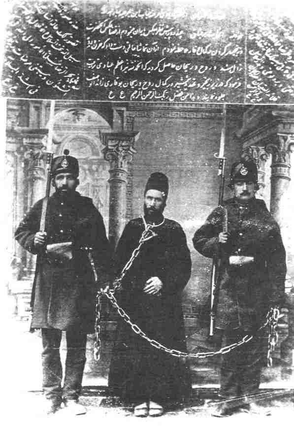

Lives of the Hands of the Cause |
1. A good deal of research on their lives has been carried out by the learned scholar of the Faith, Dr Shápúr Rásekh, and published in Persia in the Bahá'í periodical Ahang-i-Badí', Nos. 3-5 (BE 107) and Nos. 7-12 (BE 129). The author is indebted to Dr Rássekh for much of the material in this chapter. |
|
Shaykhís, thoughtfully traversing those areas of knowledge, intuitive wisdom, and illumination; but he thirsted after the wellspring of truth, and hungered for the bread that comes down from Heaven. No matter how he strove to perfect himself in those regions of the mind, he was never satisfied; he never reached the goal of his desires; his lips stayed parched; he was confused, perplexed, and felt that he had wandered from his path. The reason was that in all those circles he had found no passion; no joy, no ecstasy; no faintest scent of love. And as he went deeper into the core of those manifold beliefs, he discovered that from the day of the Prophet Muhammad's advent until our own times, innumerable sects have arisen: creeds differing among themselves; disparate opinions, divergent goals, uncounted roads and ways. And he found each one, under some plea or other, claiming to reveal spiritual truth; each one believing that it alone followed the true path--this although the Muhammadic sea could rise in one great tide, and carry all those sects away to the ocean floor. 'No cry shalt thou hear from them, nor a whisper even.'*He was about nineteen years of age when he came in contact with the Bábís of the time. Bahá'u'lláh was then in Baghdád, and a few copies of the Kitáb-i-Íqán were circulating among the believers. It appears that a perusal of that heavenly Book in about the year 1861 ignited the fire of faith in his pure heart. This fire of the love of Bahá'u'lláh began to burn within him fiercely, and as time went on its heat could be felt by those who came in |
* Qur'án 19:98.
2. Memorials of the Faithful, pp. 9-10. |
|
|
contact with him; indeed, he became the fulfilment of the words of Bahá'u'lláh revealed in a Tablet to Ibn-i-Asdaq describing the quality of a true Bahá'í:
O Friends! You must all be so ablaze in this day with the fire of the love of God that the heat thereof may be manifest in all your veins, your limbs and members of your body, and the peoples of the world may be ignited by this heat and turn to the horizon of the Beloved.3'Abdu'l-Bahá describes him as a fountain:
Like a fountain, his heart welled and jetted forth; meaning and truth, like soft-flowing crystal waters, began to stream from his lips. At first, with humility, with spiritual poverty, he garnered the new light, and only then he proceeded to shed it abroad. For how well has it been said,Rank and fortune never came Mullá 'Alí-Akbar's way. Instead, sufferings and persecution were his lot from the early days of his conversion to the Faith. Soon after embracing the Cause of God he was forced out of the city of Mashhad by the fanatical theological students. He returned to his native village and began to teach the Cause there. Again the enemies became alarmed and attacked him in every way. Eventually he left his family and settled in Tihrán. Soon he became known as a Bahá'í there, and his teaching exploits evoked great opposition from the clergy. 'Abdu'l-Bahá writes of him in these words:
This honored man was successful in converting a multitude. For the sake of God he cast all caution aside, as he hastened along the ways of love. He became as one frenzied, as a vagrant |
* Qur'án 3:91.
3. Unpublished compilation, National Archives Committee, no. 27, p. 394. 4. Memorials of the Faithful, p. 10. |
|
and one known to be mad. Because of his new Faith, he was mocked at in Tihrán by high and low. When he walked through the streets and bázárs, the people pointed their fingers at him, calling him a Bahá'í. Whenever trouble broke out, he was the one to be arrested first. He was always ready and waiting for this, since it never failed.5The first time he was imprisoned was by order of Hájí Mullá 'Alíy-i-Kaní,* the highest religious dignitary of Tihrán. This is believed to have been around 1868. The Pen of Bahá'u'lláh addressed a Tablet6 to this clergyman which is wrathful in its tone and highly condemnatory in its contents. He informs this proud and tyrannical high priest that the Prophet of Islám wept aloud in the highest paradise because of his wicked deeds. He sternly rebukes him for issuing death warrants for the believers, proclaims to him the greatness of His Cause, asserts that if all the powers of the earth were to be leagued against Him they would utterly fail to prevent the establishment of His Faith in the world, and warns that God lies in wait and is watchful of his doings. In other Tablets Bahá'u'lláh foreshadowed that God would soon strike him down in the same way as He did the 'Wolf' and the 'She-serpent',† and this what happened. It is not known exactly how long Mullá 'Alí-Akbar was kept in this prison, but some years later in 1872 he was again taken to prison by the orders of Kamrán Mírzá the Náyibu's-Saltanih, the Governor of Tihrán.‡ This imprisonment, which lasted seven months, began only three days after his marriage to a certain Fátimih Khánum who became his devoted consort throughout his eventful life. It is reported that at the time of his marriage he was living in a dilapidated room and his earthly possessions consisted of a sheepskin and a kettle! Mullá 'Alí-Akbar endured the hardships of imprisonment in a spirit of joy, of pride and of thankfulness to his Lord. He was kept in a narrow dark prison cell with a chain around his neck and |
* For his involvement in the martyrdom of Badí' see vol. 3, p. 191. † see above, ch. 6. ‡ He was a son of Násiri'd-Dín Sháh, and an influential personality.
5. Memorials of the Faithful, pp. 10-11. 6. Má'idiy-i-Ásamání, vol. 4, p. 360. |
|
|
stocks on his feet. He suffered greatly in this prison. In a Tablet7 Bahá'u'lláh describes how the inmates of the highest Paradise have raised their voices and announced the glad-tidings that 'Alí-Akbar had entered the prison in the path of God. He showers upon his soul His blessings and His love, and denounces the actions of the oppressors. In another Tablet8 He states that the Concourse on High have lamented for his sufferings, and urges him to become exhilarated with an abiding joy for he has endured severe hardships in the path of his Lord. Soon after his release from this prison he travelled to northern parts of Persia, where he was able to enthuse the believers and galvanize them into action. Bahá'u'lláh, in a Tablet9 revealed after this journey, praises his work, states that God has chosen him for the service of His Cause, and asserts that the greatest service to His Threshold is that of uniting the souls and causing them to love each other. He directs him to be engaged in this type of activity at all times, and assures him of divine assistance in his life. Mullá 'Alí-Akbar went on pilgrimage and attained the presence of his Lord for the first time in 1873. He basked in the sunshine of Bahá'u'lláh's unfailing love and bounties for about six months. Then he returned to Tihrán and resumed his devoted services to the Cause he loved so much. He was constantly teaching receptive souls, deepening the believers, and encouraging them with the utmost love to serve the Faith of God. Mullá 'Alí-Akbar was taken to prison six times altogether and spent about seven years bound with chains and fetters in the gloomy surroundings that were the Persian jails. 'Abdu'l-Bahá speaks of this in these words:
Again and again he was bound with chains, jailed, and threatened with the sword. The photograph of this blessed individual, together with that of the great Amín, taken of them in their chains, will serve as an example to whoever has eyes to see. There they sit, those two distinguished men, hung with chains, shackled, yet composed, acquiescent, undisturbed.* |
* For this photograph see vol. 3, facing p. 61. (A.T.)
7. Mu'assisiy-i-Ayádíy-i-Amru'lláh, p. 391. 8. Unpublished compilation, National Archives Committee, no. 19, p. 421. 9. Mu'assisiy-i-Ayádíy-i-Amru'lláh, pp. 394-5. |
|
Things came to such a pass that in the end whenever there was an uproar Mullá 'Alí would put on his turban, wrap himself in his 'abá and sit waiting, for his enemies to rouse and the farráshes to break in and the guards to carry him off to prison. But observe the power of God! In spite of all this, he was kept safe. 'The sign of a knower and lover is this, that you will find him dry in the sea.' That is how he was. His life hung by a thread from one moment to the next; the malevolent lay in wait for him; he was known everywhere as a Bahá'í--and still he was protected from all harm. He stayed dry in the depths of the sea, cool and safe in the heart of the fire, until the day he died.10One of his imprisonments, which lasted about two years, was noteworthy in that Náyibu's-Saltanih arrested a number of outstanding personalities among the Bahá'ís in 1882 and interrogated them extensively about the Faith.* Another imprisonment was around the year 1887 and finally his two-year imprisonment which began in 1891, the first part in the prison of Qazvín for about eighteen months in company with Hájí Amín and the remainder in the prison of Tihrán. It was on the occasion of their imprisonment in Qazvín that Bahá'u'lláh revealed the celebrated prayer† for the Hands of the Cause. Soon after the martyrdom of Badí' a severe famine swept over Persia. Mullá 'Alí-Akbar begged Bahá'u'lláh for it to come to an end. We have already described Bahá'u'lláh's response in the previous volume. One of his great achievements was the transportation and protection of the remains of the Báb in Tihrán, a detailed account of which also appears in the previous volume.‡ When Bahá'u'lláh revealed the Kitáb-i-Aqdas He withheld the publication of certain laws. These included the text of the Obligatory Prayers.§ In one of His Tablets11 Bahá'u'lláh orders | * For further details see below, pp. 379-80. † see above, p. 288. ‡ see vol. 3, pp. 200-201, and Appendix 1, for these two incidents. § see vol. 3, pp. 348-51
10. Memorials of the Faithful, p. 11. 11. Unpublished compilation, National Archives Committee, no. 15, p. 435. |
|
|
His amanuensis, Mírzá Áqá Ján, to send a copy of the Obligatory Prayers to Persia as a favour to Mullá 'Alí-Akbar who had asked for them. He confirms that the Obligatory Prayers had been revealed a few years earlier. Mírzá Áqá Ján gives the date of this release as one and a half hours after sunset on 27 October 1887. In numerous Tablets addressed to Mullá 'Alí-Akbar, Bahá'u'lláh urges him, as He does other Hands, to move around the community and instil into the minds of the believers the power of the Faith, to illumine their faces with the effulgent light of His Revelation and to ignite within their hearts the fire of the love of their Lord. Mullá 'Alí-Akbar attained the presence of Bahá'u'lláh for the second time around the year 1888. When in His presence he would continually receive a share of the bounties of Bahá'u'lláh, and when away he used to write to Him regularly and receive various exalted Tablets. Once he wrote to Mírzá Áqá Ján, Bahá'u'lláh's amanuensis, and complained somewhat. When Bahá'u'lláh was informed He wrote that he had no right to complain, for so much spiritual food and imperishable benefits had been showered upon him from the heaven of divine bounty that he would be unable to reckon them. Therefore he ought to thank, and thank and thank (Bahá'u'lláh repeats the word nine times!) his Lord for the blessings He has vouchsafed to him.12 It must be stated that one of the great services that all four Hands rendered to the Cause was the stewardship of the Bahá'í community after the ascension of Bahá'u'lláh. Through their loving care and vigilance they protected the believers from the onslaught of the Covenant-breakers, and enabled the faithful to remain steadfast in the Covenant. 'Abdu'l-Bahá pays a glowing tribute in this context to the memory of this great and godly man, who passed away in March 1910:
After the ascension of Bahá'u'lláh, Mullá 'Alí continued on, loyal to the Testament of the Light of the World, staunch in the Covenant which he served and heralded. During the |
12. Unpublished compilation, National Archives Committee, no. 15, p. 414. |
|
lifetime of the Manifestation, his yearning made him hasten to Bahá'u'lláh, Who received him with grace and favor, and showered blessings upon him. He returned, then, to Írán, where he devoted all his time to serving the Cause. Openly at odds with his tyrannical oppressors, no matter how often they threatened him, he defied them. He was never vanquished. Whatever he had to say, he said. He was one of the Hands of the Cause of God, steadfast, unshakeable, not to be moved.Mírzá 'Alí-Muhammad (Ibn-i-Asdaq) Mírzá 'Alí-Muhammad was a son of one of the most illustrious of the believers, Mullá Sádiq-i-Khurásání, who was entitled by Bahá'u'lláh Ismu'lláhu'l-Asdaq† (The name of God, the most truthful). As he grew up it became clear that this son had inherited many of the outstanding qualities and virtues of his father. He became known among the believers as Ibn-i-Asdaq (The son of Asdaq). He had the great honour as a young boy of accompanying his father to Baghdád, where they both attained the presence of Bahá'u'lláh. In several interviews this youth came face to face with the Supreme Manifestation of God. These meetings left an abiding impression upon his soul and magnetized his whole being with the love of his newly-found Lord. While they were in Baghdád Bahá'u'lláh revealed a prayer14 in which He supplicates God to feed the young boy with the milk of |
* Qur'án 54-5. † For a brief account of his noble life see vol. 3, p. 253-8.
13. Memorials of the Faithful, pp. 11-12. 14. Mu'assisiy-i-Ayádíy-i-Amru'lláh, p. 466. |
|
|
His bounty so that he may be enabled to raise the standards of victory in His Name and arise to serve His Cause when he is older. In this prayer Bahá'u'lláh describes him as one who in his tender years had travelled a long distance seeking to meet his Lord, and this he had achieved when he attained His presence. Soon after his return home he tasted the agony of imprisonment and torture when, in the company of his illustrious father, he was consigned to the dungeon of Tihrán. A brief account of this episode is given in a previous volume.* As he grew up Ibn-i-Asdaq often accompanied his father on his teaching tours throughout Persia. Thus he became imbued with the spirit of service to the Cause of Bahá'u'lláh, and eventually developed a passionate love for Him, a love that knew no bounds. He was about thirty years of age when he sent a letter to the presence of Bahá'u'lláh and, among other things, begged Him to confer upon him a station wherein he might become completely detached from such realms as 'life and death', 'body and soul', 'existence and nothingness', 'reputation and honour'. The gist of everything Ibn-i-Asdaq requested in this letter was the attainment of the station of 'utter self-sacrifice'; a plea for martyrdom, a state in which the individual in his love for his Beloved will offer up everything he possesses. It is an interesting thought that in one's quest for 'self-sacrifice' it is inappropriate for the soul to seek the station of utter nothingness and complete non-existence, for even these can become the means of attachment to oneself. In response Bahá'u'lláh revealed a Tablet to Ibn-i-Asdaq.15 This was in January 1880. In this Tablet He confers upon him infinite blessings and prays that he may become fully sanctified and detached from earthly things, that he may conduct himself in such wise as befits the Day of God, and that he may attain the station of the most great martyrdom. He states that service to the Cause is the greatest of all deeds, and that those who are the symbols of certitude ought to be engaged in teaching with the utmost wisdom. He further explains that martyrdom is not |
* see vol. 3, pp. 266-7.
15. Unpublished compilation, National Archives Committee, no. 27, p. 351. |
|
|
confined to the shedding of blood, as it is possible to live and yet be counted as a martyr in the sight of God. In this Tablet Bahá'u'lláh showers upon him His blessings, for he had offered up his all to his Lord. Two years later Ibn-i-Asdaq again asked for martyrdom. Bahá'u'lláh assured him in a Tablet16 that God had bestowed upon him the station of a martyr, and addressed him as Shahíd-ibn-i-Shahíd (martyr, son of the martyr). In this way both father and son, without physical martyrdom, were given this lofty station. Ibn-i-Asdaq attained the presence of Bahá'u'lláh once more in 'Akká. In a Tablet17 Bahá'u'lláh asserts that on this visit his ears were blessed to hear the shrill voice of His exalted Pen, his eyes to behold His Countenance, and his heart to turn to Him. He bids him illumine the hearts of men through the effulgent rays of His utterance, and brighten their eyes by the light of His Countenance. In every Tablet revealed in his honour by Bahá'u'lláh, one finds words of praise and appreciation for his devoted services, as well as counsels and exhortations for the living of a saintly life. The life-style of Ibn-i-Asdaq was different from that of Mullá 'Alí-Akbar. He married a princess, a great-grand-daughter of Fath-'Alí Sháh who was a devoted believer. This brought him close to people of high position and wealth and so he was able to teach those who could use their influence in assisting the oppressed community. He often used the phrase, 'one ought to hunt a lion, not a fox'. Ibn-i-Asdaq travelled extensively throughout the length and breadth of Persia, and Bahá'u'lláh always urged him to be engaged in this meritorious service. In a Tablet revealed in his honour, Bahá'u'lláh counsels him in these words:
The movement itself from place to place, when undertaken for the sake of God, hath always exerted, and can now exert, its influence in the world.18In another Tablet19 Bahá'u'lláh exhorts Ibn-i-Asdaq to be as a |
* see vol. 1, p. 35n.
16. Unpublished compilation, National Archives Committee, no. 27, p. 314. 17. ibid. p. 222. 18. Shoghi Effendi in The Advent of Divine Justice, p. 70. 19. Unpublished compilation, National Archives Committee, no. 27, p. 178. |
|
|
flame of fire among the loved ones of God, so that every soul may sense the heat of the love of their Lord from him. After the ascension of Bahá'u'lláh Ibn-i-Asdaq continued in his devoted services to the Cause. Along with the other Hands of the Cause, he promoted the Covenant of Bahá'u'lláh among the believers, instructed them in its significance and assisted them to remain steadfast in the face of the Covenant-breaking that occurred at that time. The range of his travels was extended during 'Abdu'l-Bahá's Ministry. He visited India and Burma, 'Ishqábád and even Europe where in 1919, accompanied by another believer, he personally presented a Tablet* addressed by 'Abdu'l-Bahá to the Central Organization for a Durable Peace at The Hague. He also attained the presence of the Master several times in his life. Among his other outstanding services was that of helping to organize a teacher-training institute for Bahá'í women in Tihrán for the first time. He also delivered to the Sháh a treatise penned by the Master during the lifetime of Bahá'u'lláh and known as Risáliy-i-Síyásíyyih (Treatise on Politics). His contribution as a writer was no less significant. For instance, in 1919 he produced, with the assistance of other Hands of the Cause, a refutation of false accusations against the Faith published by Professor Edward Browne in his books. He also wrote various papers on the subject of the Covenant, in which he explained the station of 'Abdu'l-Bahá as the Centre of the Covenant and the authorized interpreter of Bahá'u'lláh's Writings, refuted the misrepresentations and false accusations of the Covenant-breakers and exposed their malicious intention to subvert the edifice of the Cause of God. He wrote this material during his last pilgrimage in the Holy Land and sent it to the friends in Tihrán. Ibn-i-Asdaq lived longer than all the other Hands, and passed away in Tihrán in 1928. Mírzá Muhammad-Taqí (Ibn-i-Abhar) Mírzá Muhammad-Taqí, addressed by Bahá'u'lláh as Ibn-i-Abhar |
* Known as the 'Tablet to The Hague'. [CLUI: Tablet to The Hague] |
|
|
(the son of Abhar) embraced the Cause through association with his father Mírzá Ibráhím-i-Abharí, who was one of the divines who became a believer in the early days of the Faith. After Bahá'u'lláh's declaration in Baghdád many Bábís were confused about the position of Mírzá Yahyá and his claims. Ibn-i-Abhar, then a young man, sought clarification from his father on this point. His father, who had already recognized the station of Bahá'u'lláh, advised his son to investigate the truth for himself by studying the Bayán* carefully. The perusal of that Book enabled Ibn-i-Abhar to discover and believe that Bahá'u'lláh and no one else was the Promised One of the Bayán, and he joyously embraced His Cause. From that time onwards he grew spiritually and was transformed into a new creation by the potency of the Words of Bahá'u'lláh. Ibn-i-Abhar went through a turbulent period soon after the death of his father in 1874. The details of the plots against him and the confiscation of all his possessions by his enemies are beyond the scope of this book. In 1876 he sent a letter to the presence of Bahá'u'lláh asking whether it was more meritorious to lay down one's life for the love of God or to teach the Cause with wisdom and the power of utterance. In a Tablet20 Bahá'u'lláh counselled him that the latter was preferable. He states that after the martyrdom of Badí' He had advised the believers to act with prudence and care and not volunteer to give their lives. Martyrdom† in the path of God is undoubtedly the greatest bounty provided it takes place through circumstances beyond one's control. He urges Ibn-i-Abhar in this Tablet to engage himself in teaching the Cause with great wisdom. Because of the opposition to him in his native village of Abhar, Ibn-i-Abhar moved to Zanján. There he succeeded in converting some souls to the Faith and also in reviving the faith of the many believers who had fallen prey to doubts raised by the Azalís. He created such a spirit of enthusiasm and devotion among the |
* The Mother-Book of the Bábí Dispensation, revealed by the Báb. † Bahá'u'lláh has ordained teaching the Cause to be as meritorious as giving one's life in His path. For further details see vol. 2, p. 94.
20. Mu'assisiy-i-Ayádíy-i-Amru'lláh, p. 422. |
|
|
believers that the divines of the city of Zanján rose up against him and consigned him to prison. The conditions of prison life were extremely cruel, yet this godly man endured dire hardships in a spirit of resignation and forbearance. According to his own statement, his imprisonment lasted fourteen months and fifteen days. He attained the presence of Bahá'u'lláh about the year 1886. In a Tablet21 revealed in his honour Bahá'u'lláh reminds him of the time he attained His presence when He showered his bounties upon him and enabled him to hearken to His sweet voice, a voice to which were attracted all created things. In the same Tablet Bahá'u'lláh directs Ibn-i-Abhar to pass through the cities, and even as a breeze that stirs at the break of dawn to shed upon whomsoever will turn to him the sweet savours of His loving-kindness and favours. This Ibn-i-Abhar did for the rest of his life. He chose Tihrán as his residence and travelled far and wide throughout Persia. His teaching exploits and loving care for the believers contributed in a large extent to the growth and consolidation of the Bahá'í community in that country. In one of His Tablets22 Bahá'u'lláh states that Ibn-i-Abhar was created to extol God and magnify His name, to teach His Cause and to serve Him. Early in 1891 the Persian government became suspicious of certain political activists and had them imprisoned. As was the usual practice, the authorities found it convenient to accuse the Bahá'ís of anti-government activities at the same time. Among those arrested were Hájí Abu'l-Hasan-i-Amín and Mullá 'Alí-Akbar, the Hand of the Cause, who were despatched to the prison of Qazvín.* Ibn-i-Abhar was consigned to the dungeon in Tihrán and kept in prison for about four years. During this period he was subjected to so much ill-treatment and torture that the full story, if written, would become very lengthy indeed. He took great pride in the fact that the same chains which had been once placed around Bahá'u'lláh's neck were put around his. A photograph† of |
* see below, pp. 337-8 † see p. 309.
21. Mu'assisiy-i-Ayádíy-i-Amru'lláh, p. 424. 22. ibid. p. 442. |
|
|
him in chains, standing with poise and dignity while guarded by the gaolers reached the presence of 'Abdu'l-Bahá. He wrote this Tablet to Ibn-i-Abhar:
Because the food in prison was inadequate, a few Bahá'ís sent food to him regularly. Two Bahá'í women, who devoted their time and energy to serving him, posed as his sisters and brought food and other necessities for him every day. As there was no paper available for prisoners to write on, Ibn-i-Abhar used to write letters in very small characters on the wrappers of sugar cones,* tea or candles, an send them out with the two ladies. He even wrote some long letters in the same fashion for non-Bahá'ís in answer to their questions and proving the truth of the Message of Bahá'u'lláh for them. These letters were later compiled in their original form, producing a small book. In spite of all the hardships he underwent, he succeeded in teaching the Faith to a few people in the prison and enabled them to recognize the station of Bahá'u'lláh and embrace His Faith. One form of torture usually inflicted upon victims in Persian prisons was the bastinado. The victim is made to lie on his back |
* In those days sugar was made in the form of large cones about 10 inches high and 5 inches in diameter, which were usually wrapped in thick blue paper. The cone had to be broken into small pieces.
23. Tablet inscribed on the photograph of Ibn-i-Abhar. |
|
|
while his feet, inserted in a loop, are held up and the soles beaten with a cane or a whip. The soles of the feet were beaten so hard that the person could not move for days. At times Ibn-i-Abhar was subjected to this form of brutal flogging. On one occasion he was so badly injured that he decided not to appear before the ladies who usually brought food for him. Soon they found out what had happened, and the friends were plunged into deep sorrow. He then wrote the following letter to his loved ones, a letter which clearly demonstrates the spirit of utter sacrifice which dominated his whole being:
May my life be sacrificed for your true loving-kindness and for the tears you have shed in the path of the Incomparable Friend. However, the situation did not justify weeping and lamenting. Because the first abode to which the wayfarer arrives in the path of love is that of renouncing life, possessions, rank and position. Was there ever an evening that I spent in your presence when you did not hear, the next morning, the reciting of the prayer, 'O Thou whose tests are a healing medicine unto such as are nigh unto Thee?' Now that this prayer has been answered, we must glorify God and render our thanks to Him. |
* Bahá'u'lláh designated women believers as 'leaves'. |

A photograph taken in the prison of Tihrán. |
but their bounty will last in the world of the spirit till eternity.Ibn-i-Abhar was still in prison when the news of the ascension of Bahá'u'lláh reached him. He was heartbroken and filled with grief. For days he was unable to calm his emotions. He wrote a letter to 'Abdu'l-Bahá seeking His help in overcoming his heavyheartedness. 'Abdu'l-Bahá wrote a Tablet to him which brought great comfort and consolation in this bereavement. He advised Ibn-i-Abhar to read the Qur'án during his confinement; it was the only book available in the prison. Soon after his release from prison in 1895, Ibn-i-Abhar travelled to the Holy Land and attained the presence of the Master. From there, 'Abdu'l-Bahá directed him to proceed to 'Ishqábád. During the Ministry of 'Abdu'l-Bahá, Ibn-i-Abhar travelled extensively throughout Persia, the Caucasus and India, visiting the Bahá'í communities, converting many souls to the Faith, and meeting high-ranking officials in various localities. On his journey to India which took place in 1907 he was accompanied by two American Bahá'ís, Hooper Harris and Harlan Ober, and by Mahmúd-i-Zarqání and his brother. They travelled to many parts of the sub-continent, and were able to further the achievements of |
24. Mu'assisiy-i-Ayádíy-i-Amru'lláh, pp. 430-31. |
|
|
the earlier teachers who had been despatched to that vast country during Bahá'u'lláh's and 'Abdu'l-Bahá's Ministries. It must also be noted that Ibn-i-Abhar travelled altogether eleven times to the Holy Land and attained the presence of the Master. An interesting episode in the life of Ibn-i-Abhar is the story of his marriage to Munírih Khánum, the daughter of the Hand of the Cause Mullá 'Alí-Akbar. After the ascension of Bahá'u'lláh, Ibn-i-Abhar (who was then in prison) made a vow to devote his whole life to the service of the Cause. A certain Persian lady by the name of Fá'izih Khánum suggested to 'Abdu'l-Bahá in person that it was time Ibn-i-Abhar got married, and suggested the above-named Munírih Khánum. 'Abdu'l-Bahá asked one of His sons-in-law to approach Ibn-i-Abhar and convey to him the timeliness of his getting married. But Ibn-i-Abhar was adamantly opposed, saying that if he married he would become involved with obligations which would result in the breaking of his vow. At last 'Abdu'l-Bahá summoned Ibn-i-Abhar to His presence and directed him to return to Tihrán and marry the daughter of Mullá 'Alí-Akbar. Ibn-i-Abhar brought up the subject of the vow. 'Abdu'l-Bahá went close to him, nudged him with His shoulder and said, 'My good man! I am the Centre of the Covenant; when I say you will not break your vow by marrying, you will not!' 'Abdu'l-Bahá also sent a message to Mullá 'Alí-Akbar and informed him of the situation, saying that Fá'izih Khánum had persisted with her request several times. When Ibn-i-Abhar arrived in Tihrán, 'Abdu'l-Bahá directed the Hand of the Cause Mírzá Hasan-i-Adíb to arrange the wedding within nine days of receiving His message. The Master sent a sum of money for the marriage feast, and the Greatest Holy Leaf a simple dress for the bride. Along with the other Hands of the Cause, Ibn-i-Abhar was a driving force for the establishment of the Spiritual Assembly of Tihrán. And as we have already stated, every one of the Hands contributed a great deal to the deepening of the friends in the important subject of the Covenant of Bahá'u'lláh. They also engendered such enthusiasm in the community that the believers |
||
|
greatly intensified their teaching activities, and as a result many souls, some of them highly educated and influential people, joined the ranks of the believers in Persia. A special service rendered by Ibn-i-Abhar was the promotion of the education of women. He and his wife played an important part in the advancement of women in Persian society. In 1909 a special committee was formed for the liberation of women, and Ibn-i-Abhar and his wife were both members of this committee. Around the year 1910, an assembly formed exclusively of women was established, and became known as the Spiritual Assembly of the Bahá'í Women. The wives of Mullá 'Alí-Akbar and Ibn-i-Abhar were both members. This Assembly, which lasted for seven years, turned to the Spiritual Assembly of Tihrán, whose members were exclusively men, for guidance on basic issues. With the encouragement of Ibn-i-Abhar, his wife Munírih Khánum founded the first Bahá'í school for girls in Tihrán. Ibn-i-Abhar passed away in Tihrán in 1917. Hájí Mírzá Hasan-i-Adíb Mírzá Hasan-i-Adíb was a distinguished and learned man who combined the knowledge of Islámic theology, as a divine, with literary erudition. Before embracing the Faith he ranked high in the literary circles surrounding the royal family, and made important contributions to the production of various literary works. He was at one time installed as the Imám-Jum'ih (a high religious post) and a teacher at Dáru'l-Funún, the only school established on the pattern of a western educational institution. The school was usually attended by members of royalty and the sons of influential people. In recognition of his outstanding literary accomplishments he was given the title of Adíbu'l-'Ulamá (Literary man of the Ulama). He also taught religious subjects to a number of would-be divines. Through various circumstances Mírzá Hasan met a believer who gave him a book of Bahá'í Writings and also introduced him to some well-known Bahá'í teachers. He came into particular |
||
|
contact with the renowned Nabíl-i-Akbar, and eventually saw the truth of the Faith, recognized the greatness of the Revelation of Bahá'u'lláh and acknowledged the awe-inspiring station of its Author. In the year 1889 he became a devoted believer; he was in his early forties at the time. All his learning and erudition were now harnessed to the new powers which the Faith of Bahá'u'lláh had conferred upon him. Soon his heart became a wellspring of divine melodies. The soul-stirring poems he wrote proclaim the advent of the Day of God and, in offering up his all in the path of his Lord, serve as ample testimony to the intensity of his faith and the exaltation of his rank. No wonder that soon after his entering under the shadow of the Cause, Bahá'u'lláh designated this great spiritual being as one of the Hands of His Cause. Mírzá Hasan-i-Adíb did not have the bounty, as the other Hands had, of meeting Bahá'u'lláh. However, he had the honour and the privilege of attaining the presence of 'Abdu'l-Bahá. During the Ministry of the Master, he dedicated all his being to the service of the Cause. He became a tower of strength for the believers and a great teacher of the Faith. His pen was no less active. He wrote several books on proofs of the Faith and its history. His poems were soul-stirring and the friends were inspired and uplifted by them. He had a major role in the formation of the Spiritual Assembly of Tihrán, and served on that body as its chairman. Mírzá Hasan-i-Adíb was deeply interested in the education of Bahá'í youth. About the year 1904 a learned Bahá'í known as Sadru's-Sudúr had established the first teacher-training class for Bahá'í youth in Tihrán. It was a daily class which lasted for several years, and the students became well-versed in various aspects of the Faith and other religions. When Sadru's-Sudúr died about five years after the foundation of the youth class, Mírzá Hasan decided to teach in his place. Assisted by a few other knowledgeable Bahá'ís, he supervised the youth class for some time. Another great achievement was the founding of the Tarbíyat |
||
|
Boys' School in Tihrán. Mírzá Hasan-i-Adíb played a significant part in creating this prestigious institution, which was considered for years the foremost educational establishment in the country. This school was also the forerunner of several other Bahá'í schools in various parts of Persia. The Tarbíyat Boys' School and the Girls' School by the same name, together with all the other Bahá'í schools in major cities, were closed down in December 1934 by order of the government for not heeding a warning by the Ministry of Education (headed by 'Alí-Asghar-i-Hikmat, a well-known Azalí) that the schools would officially be closed if they failed to remain open during Bahá'í holy days. Despite several representations by the National Spiritual Assembly, the authorities remained adamant and all the Bahá'í schools in Persia were closed down after closing on a Bahá'í holy day. In 1903 'Abdu'l-Bahá directed Mírzá Hasan-i-Adíb to make a teaching trip to Isfahán. This journey took place at a time when a great upheaval was about to take place in Yazd through the machinations of the Mujtahid of Isfahán, Shaykh Muhammad-Taqí (the Son of the Wolf). The presence of Mírzá Hasan in Isfahán put fuel to the fire; a serious upheaval took place in the city resulting in great sufferings for the Hand of the Cause. He at last succeeded in departing from the city without being noticed by the many guards whom the wicked mujtahid had especially posted in various quarters for the sole purpose of arresting him. From there Mírzá Hasan went to Ábádih and Shíráz, where he was able to teach the Cause to several people. Then he travelled to India, and eventually to the Holy Land where his soul was exhilarated by coming in contact with the Centre of the Covenant of Bahá'u'lláh. There his whole being was illumined with the effulgent rays of 'Abdu'l-Bahá's presence. He returned to Persia as a flame of fire ignited by the hand of the Master, and continued in his highly meritorious services until his death in 1919. His resting-place is in Tihrán, in common with the resting-places of the other three Hands of the Cause.
|